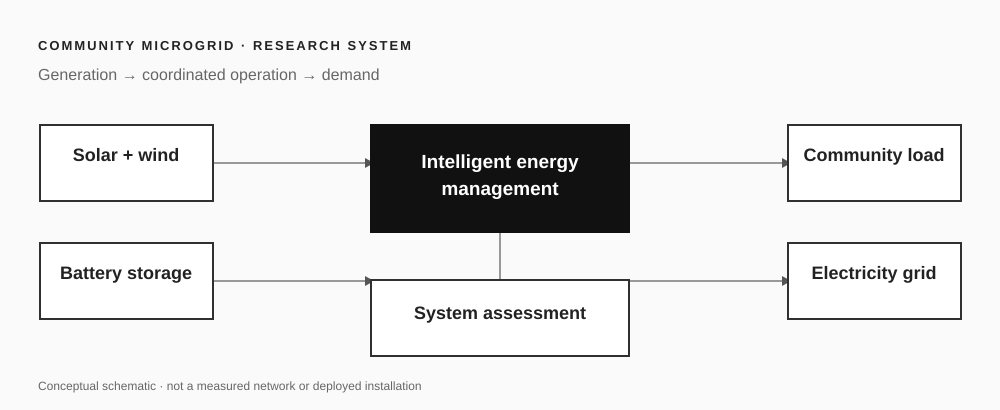

Power systems research
Research Associate · UNSW Canberra
Dr Moslem Uddin
Intelligent energy systems · Community microgrids · Low-carbon power
I study how renewable generation, storage and intelligent energy management can make community-scale power systems more reliable, affordable and resilient.
Research system
Energy decisions at community scale

Research themes
All research themes →Community microgrids
Design and operation of local systems that integrate renewables, storage and the grid.
Energy management
Supervisory decisions for dispatch, peak-demand reduction and everyday operation.
Resilience & decarbonisation
Evaluating reliability, operating cost and emissions together.
Research influence
Explore impact →2.6K+Citations
14h-index
17i10-index
Scholar figures supplied for September 2026; visit Google Scholar ↗ for the current profile.